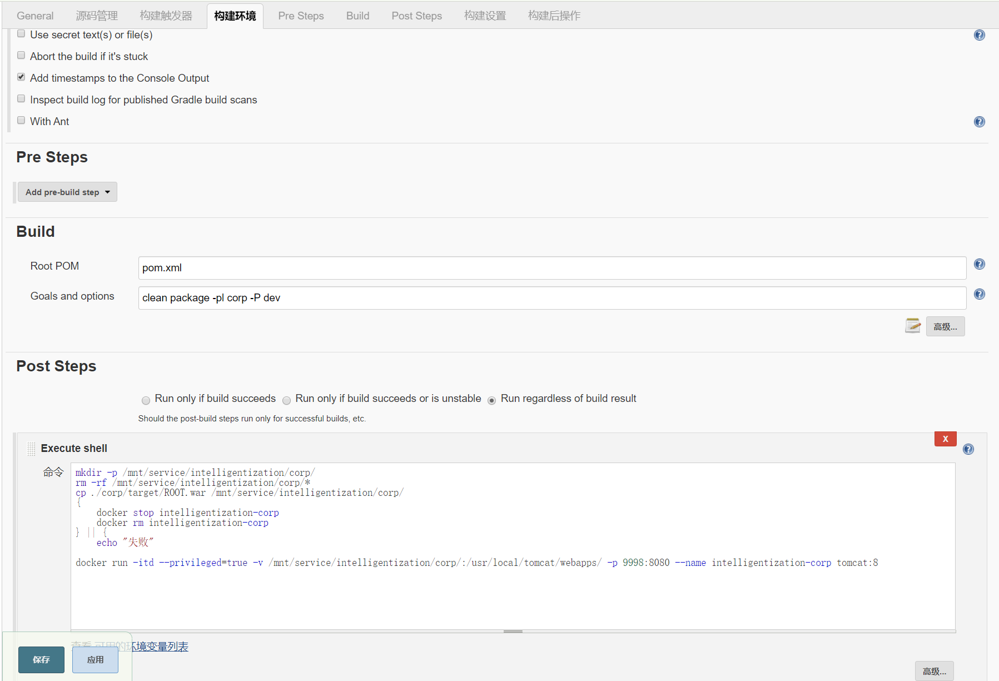

每次都手动打包springboot项目，部署war包到docker中，显然效率太低了，因此可以使用jenkins实现持续集成部署。
创建一个maven项目，使用git进行源码管理，可以配置webhook，也可以手动构建项目
Build
构建中使用Maven进行项目的打包
1 | clean package -pl corp -P dev |
- -pl：指定打包的子模块
- -P：指定打包的测试环境（必须是大写）

Post Steps
选择执行shell命令
1 | # 创建挂载的目录 |
1 | docker run -itd --privileged=true -v /mnt/service/intelligentization/corp/:/usr/local/tomcat/webapps/ -p 9998:8080 --name intelligentization-corp tomcat:8 |
-v /mnt/service/intelligentization/corp/:/usr/local/tomcat/webapps/前一个是挂载的本机的目录，后一个是docker容器的目录，docker会将挂载目录的内容拷贝到docker对应的目录，而且tomcat会热部署，一旦挂载的war包发生变动，tomcat就会自动重新部署-p 9998:8080前一个9998是映射的本机端口，一个8080是docker容器的端口
简化部署
因为要部署的war包并不在docker容器中，而是通过挂载的形式，那每次构建之后新建的docker容器其实是一样的，所以在第一次新建容器之后，其实并不需要每次都去重新构建一次容器，只需要更新docker挂载目录的内容即可。
因此，之前执行的shell命令可以简化一下
1 | # 创建挂载的目录 |
-------------本文结束 感谢您的阅读-------------